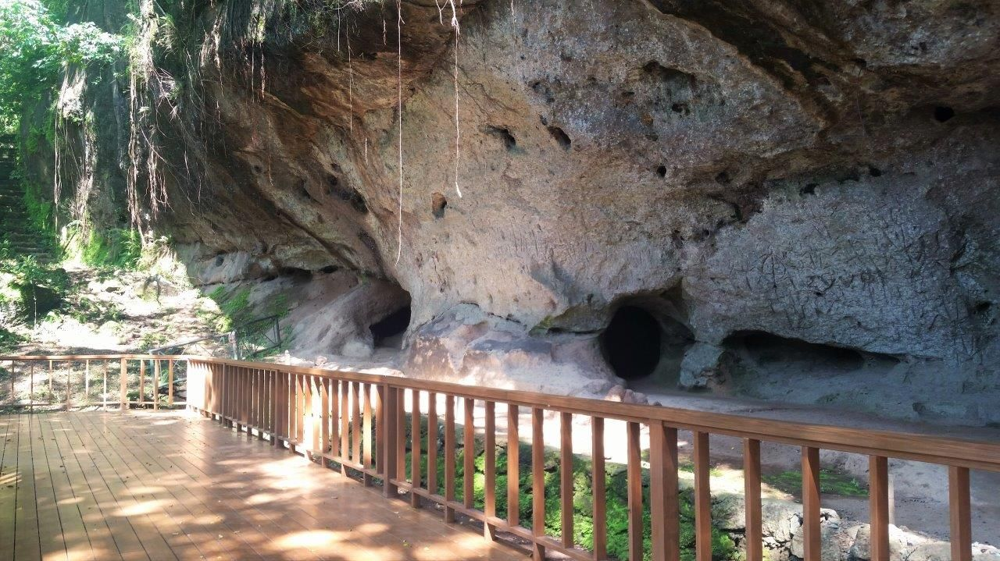
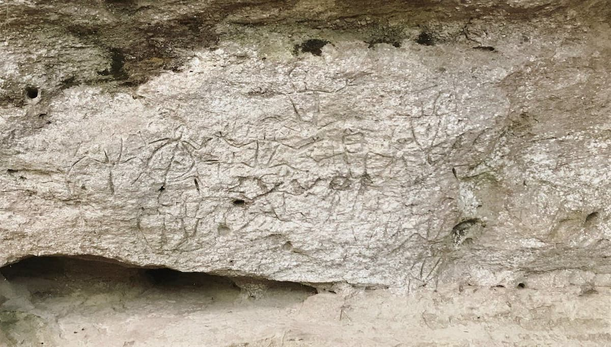
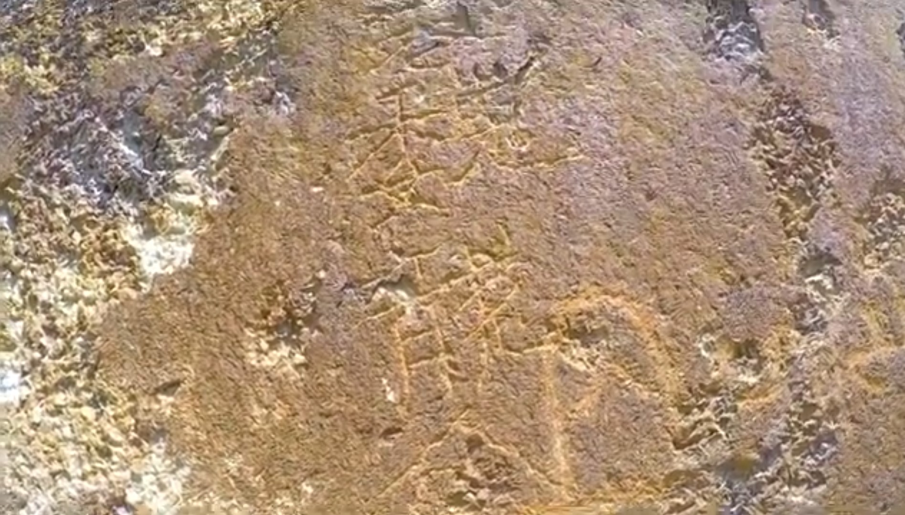
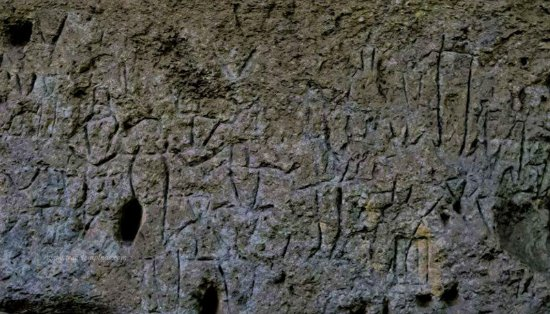

Location:
Binangonan-Angono Boundary, Rizal.
Best for: History Buffs, Students, and Cultural Explorers.
Vibe: Ancient, Mysterious, and Educational.


Angono-Binangonan Petroglyphs
Witness the Oldest Known Artworks in the Philippines.
Stepping into this site is like traveling back five thousand years to the dawn of Philippine civilization. Recognized as a UNESCO World Heritage site, these carvings are the oldest known artworks in the archipelago, consisting of 127 stylized figures etched into a volcanic rock wall.
Binangonan-Angono Boundary, Rizal.


